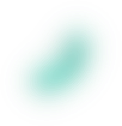
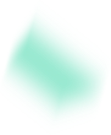
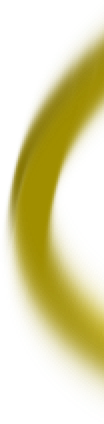
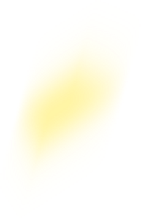
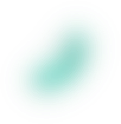
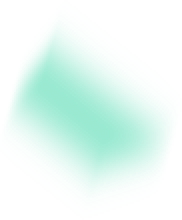
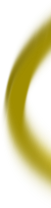
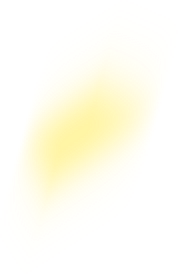

只要於活動期間成為 Sudo 的平台會員，完成履歷並且通過審核，就可以投遞給所有參與活動的企業。投遞履歷後，會直接取得抽獎資格，有機會得到 5/28 香港紅勘演唱會門票及來回機票！
- 投遞履歷給企業之前，Sudo 會進行履歷完整性及內容的審核，請密切注意信箱訊息！
- 抽獎結束之後活動會繼續進行至 5/31 號，可以繼續投遞履歷。
- Sudo 將全額提供五月天香港紅勘演唱會門票以及香港來回機票，但不包含食宿。
只要於活動期間成為 Sudo 的平台會員，完成履歷並且通過審核，就可以投遞給所有參與活動的企業。投遞履歷後，會直接取得抽獎資格，有機會得到 5/28 香港紅勘演唱會門票及來回機票！
 






